Software engineer & product builder · Quality engineering at Costco Travel · Building Spikeproof independently
I care about software that is reliable underneath and exceptional to use.
Spikeproof · Website · Code · Writing · X
A little about me
I got into programming because I loved the idea that a sketch of a system could become something real. That curiosity turned into a career spanning software development, API quality, test infrastructure, and performance engineering.
Today, I work on software quality and performance at Costco Travel. Outside work, I build developer tools and products of my own. I care as much about the interaction model and the last 10% of polish as I do about the architecture behind it.
My north star: make powerful systems easier for people to understand and operate.
Featured build — Spikeproof

Spikeproof is an independently developed desktop performance engineering workspace. It brings API testing, browser flows, conditional journeys, k6 load execution, and detailed investigation into one place.
Instead of stopping at “the p95 went up,” I'm exploring what it looks like for a tool to help answer “what actually changed in the system, and why?”
| Design journeys | Apply real load | Follow the evidence |
|---|---|---|
| API + browser flows, branching, and shared test data | Locally executed k6 workloads, thresholds, and reusable tests | Latency distributions, errors, step-level analysis, and run comparisons |
Explore the product · Desktop releases · Report an issue
Spikeproof is an independent project. Its application source is currently private; the public releases repository distributes installers.
Under the hood · The engineering problems I'm exploring
- Execution that tells the truth. Real runs have partial output, dropped iterations, failed assertions, retries, timeouts, and early termination. The report needs to distinguish all of them.
- Useful observability. Distribution-aware latency telemetry, synchronized time windows, step-level evidence, and comparisons that account for different request mixes.
- Journeys as systems. Parallel operations, conditional branches, variables, browser actions, and API requests belong in one coherent testing model.
- Thoughtful developer experience. Powerful tools should be navigable by people who didn't build them.
flowchart LR
A[Model a system journey] --> B[Execute locally]
B --> C[Collect telemetry]
C --> D[Investigate evidence]
D --> E[Improve the system]
E -. repeat .-> A
What I've been building publicly

This is a public-project signal, not an activity score. The image refreshes from GitHub's public repository API when the included workflow is enabled; private work is never included.
Some public repositories worth exploring: Spikeproof releases · Similarity-Scout · hunter.me. These are different kinds of work, and not all represent my current technical approach.
The work I gravitate toward
| Area | What interests me |
|---|---|
| Developer experience | Building tools that make complicated workflows feel intuitive. |
| Performance & reliability | Understanding bottlenecks, failure paths, and system behavior under stress. |
| Full-stack product engineering | Taking an idea from interface and architecture to something people can actually use. |
| Teaching & leadership | Explaining difficult concepts clearly and helping engineers become more effective. |
Engineering notebook · Principles I try to build by
Start with the evidence. A beautiful dashboard isn't useful if the underlying measurements are misleading.
Make failure states first-class. Slow requests, skipped operations, incomplete runs, and invalid assumptions should never quietly masquerade as success.
Optimize for understanding. The right visualization can replace ten paragraphs. The wrong one can obscure a system's most important behavior.
Sweat the interaction details. Keyboard navigation, empty states, compact layouts, readable information density, and a predictable workflow matter.
Keep an open mind. Some of the best engineering ideas come from the people closest to the problem, regardless of title.
Toolbox · Languages, frameworks and engineering systems
| Tools I use | |
|---|---|
| Languages | TypeScript, JavaScript, Python, Java, SQL |
| Frontend | React, Next.js, Tailwind CSS |
| Backend & APIs | Node.js, Spring Boot, REST APIs |
| Testing & performance | k6, Playwright, Selenium, JUnit, Pact, REST Assured |
| Delivery & diagnostics | GitHub Actions, Jenkins, Azure DevOps, Splunk Observability |
Tools change. My preference for reliable systems and clear interfaces doesn't.
Beyond the editor
I’ve taught programming and worked with students learning to write their first real software. I also build and write Raiders Rundown, an independent football publication—another excuse to combine engineering, storytelling, and a strong point of view.
If you're interested in developer tools, performance engineering, or building ambitious products, you'll find common ground here.
See what I'm building · Browse projects · Visit my site

Designed and maintained by Hunter. Original SVG artwork lives in this repository, supports dark and light themes, and respects reduced-motion preferences.